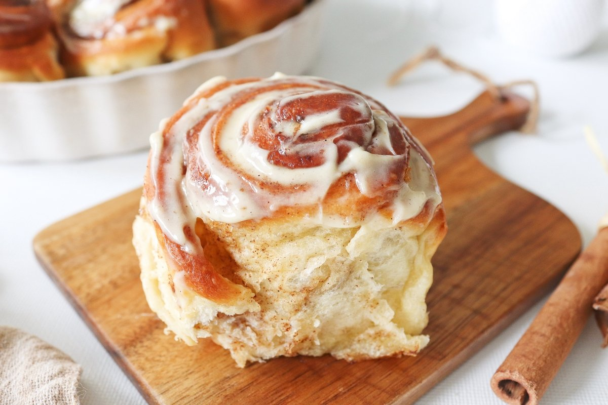

|
Pay de limon |
Deliciosa tarta de limon con merengue |
|
Cheesecake con frutos rojos |
Pay de queso con jalea de frutos rojos. |
 |
Gallletas con chispas de chocolate |
galleta con pepitas de chocolate o con chispas de chocolate |
 |
Donas glaseadas |
Esponjosas donas glaseadas de distintos sabores. |
|
Churros españoles |
Churros españoles espolvoreados de azucar y canela |
|
Chocoflan |
Deliciosa combinación de Flan Napolitano con exclusivo pan de chocolate |
|  |
Rollos de canela |
Rollos encanelados glaseados |
 |
Macarons |
dulces densos hechos con almendra y clara de huevo o con una pasta de almendra gruesa |